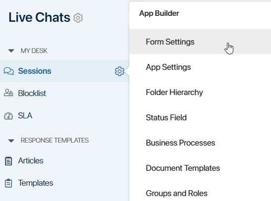
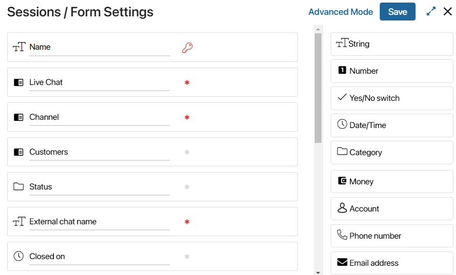
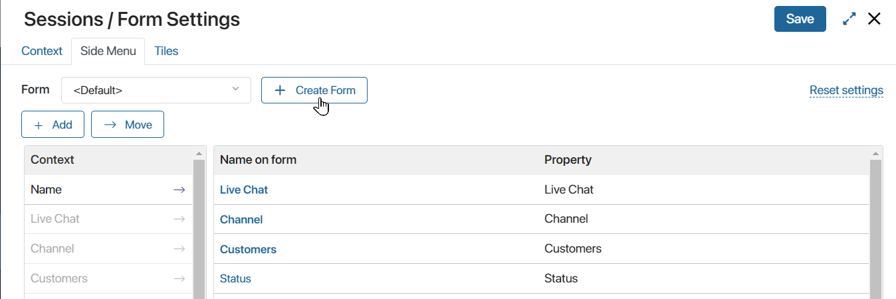
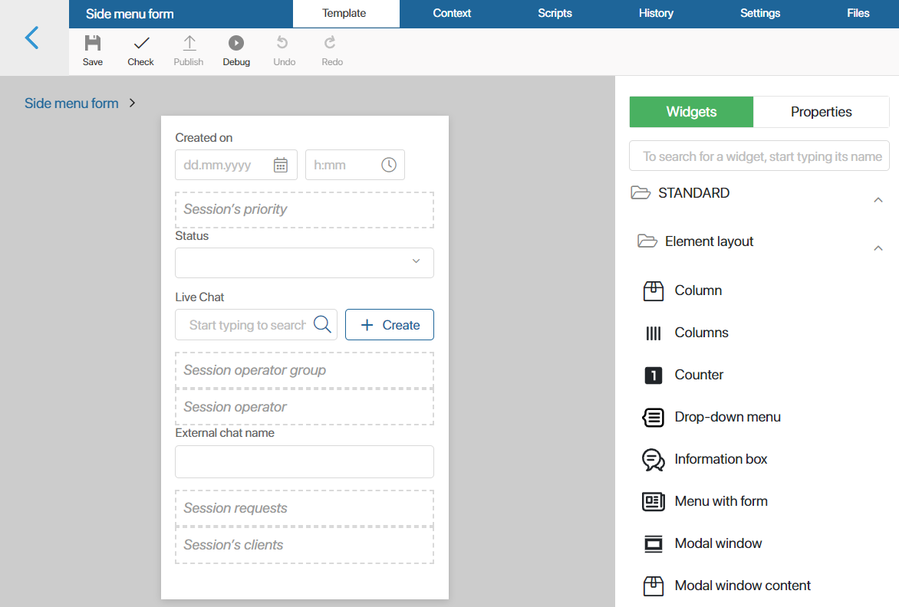
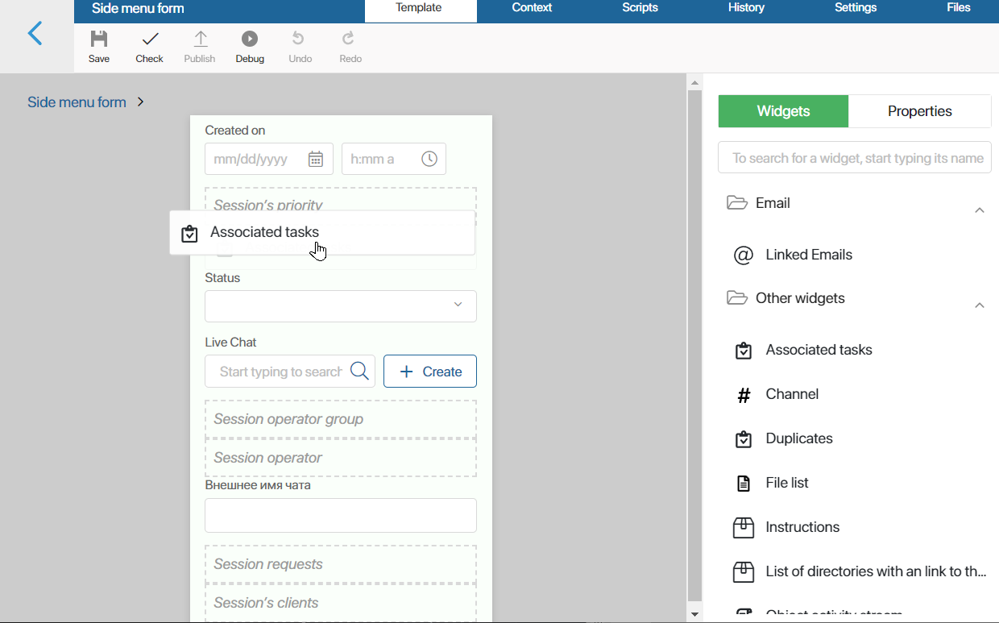
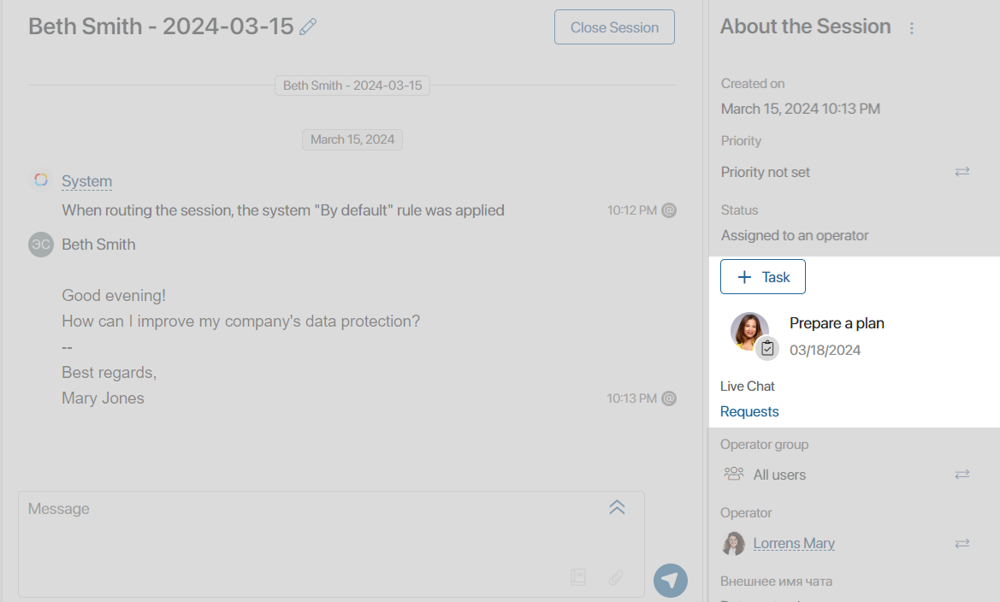
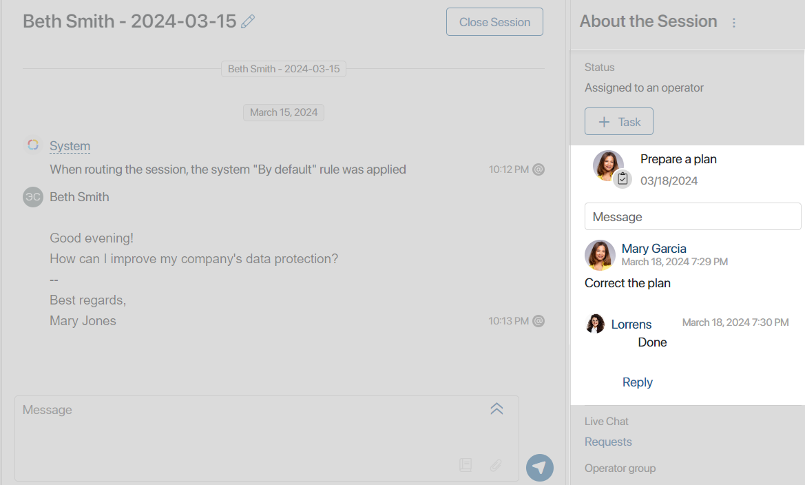
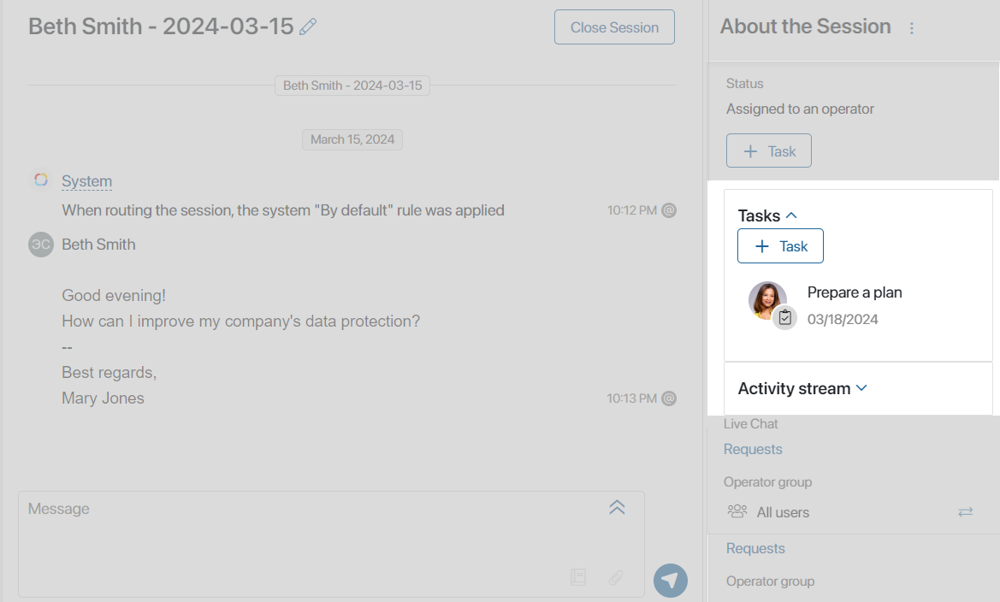

You can configure sessions by changing the list of their parameters. Parameters are used to store information about a session. They are shown on its page. The values of parameters are set by supervisors and operators responsible for the session.
Session parameters are configured when you create a live chat and when you change the Sessions app form and apply to all sessions created in the live chat. Let’s take a closer look at both methods.
Main parameters
In the Administration workspace, when setting up the live chat, a user from the Administrators group can define the following parameters:
- Configuring the session name template
To make a session’s name more informative, you can set a session naming template. A template can include such parameters as the client’s name, the session creation date, the live chat and channel name, or the message subject.
Operators and supervisors can also change a session’s name manually on its page. This can be done in the About the Session section by clicking the pencil icon next to the session name in the header of the chat window.
- Binding sessions to apps
The operator can save information about the client and their messages on the session page. For example, the operator can quickly add a client to the database, register a message, or create a request. This can be done by the operator on the session’s page. This functionality is available if the live chat is linked with an app. Read more about it in the Create a live chat article.
- Granting access to read a session
If a live chat is linked with an app, its sessions can be saved on item pages of this app. Even employees who don’t have access to the Live Chats workspace can view messages from sessions. For example, a sales rep can view the entire history of communications with a client on the deal page.
To do this, the form of the app linked with the live chat has to have the Live Chat Messages widget, and users who are allowed to view sessions on app item pages have to be specified in the live chat settings.
Custom parameters
In the Sessions app, system administrators can change the parameters that store information about the session and the client. These settings are displayed in the right sidebar of the session page.
For example, you can add or hide parameters, change the order in which they are displayed, and display additional widgets in the panel.
To do so, to the right of the Session app name, click the gear icon and select Form Settings.

The Form Settings window will open. It consists of two areas: on the left there are all properties from the Session app context, on the right there is a list of all property types available for adding. Read more in the System data types article.

To add a new parameter, drag a property from the right-side panel to the list of form fields. You can add different fields for entering additional contact details of the client or a String for leaving a comment.
To place new custom properties on the sidebar of the session page, switch to advanced mode.
To do this, click the Advanced mode button in the upper right corner of the window. After confirming the action, a window with three tabs will open: Context, Side Menu, and Tiles.
Let’s consider working with them in detail.
Context tab
The tab displays all properties that are in the Session app context. Here you can create new custom properties that can be added to the right sidebar of the Session page.
With custom properties, operators and supervisors can enter additional information about the session into the system, such as providing contact information about the client, summarizing the subject of the appeal, or leaving a comment.
To add a new property, click the + Add button. To learn more about working on this tab, see the Context tab article.
To display a custom property on the sidebar of the session page, go to the Side Menu tab and open the interface designer.
Side Menu tab
On this tab, you can go to the interface designer, where you can change the layout of the right sidebar. To do this, click on the <Default> link. The + Create Form button will appear. Clicking on it will open a window where you can change the name of the default form.

To proceed to configuring an existing template, click the Edit Form button.
The interface designer opens, where you can configure the layout of the right sidebar of the session page.

By default, the form contains the following elements:
- Created on. A system property that records the date of session creation.
- Status. A system property that displays the status of the session: In queue, Assigned to an operator, Assigned to a bot, Closed, or In spam.
- Session’s priority. A widget with which operators and supervisors can set the priority of handling a message: High, Medium, or Low. The default setting is Priority not set.
- Live Chat. A system property that displays the name of the live chat where the message came in.
- Session operator group. A widget that allows supervisors and operators to view and modify the group of operators responsible for the message.
- Session operator. A widget that allows supervisors and operators to assign a session to a specific operator.
- External chat name. A system property that stores the email subject or group chat name.
- Session requests. A widget that can be used to save message information to the app specified in the live chat settings in the To register messages field. For example, to register a request.
- Session’s clients. A widget with which you can save information about a client in the message specified in the live chat settings in the To bind an account field. For example, to add a customer to the database.
You can remove unused properties, add new ones, change the order of their display, and bring additional widgets to the panel.
Add a property
In the right sidebar, open the Properties tab. Select the property created on the Context tab from the list and place it on the modeling canvas.
Please note, that when working with a message on a session page, operators cannot manually change the values of properties created on the Context tab. You can assign values to such properties by configuring the business process, where the Script activity will control the property value. In this case, the operator will be able to start the process on the session page.
For example, you can configure a process in which the fields for entering additional data are located on the start event form or the task form. After the operator enters the data, it will be assigned to a custom parameter using the Script activity.
Read more in BRIX TS SDK in the Live Chats workspace.
Add a widget
In the right sidebar, open the Widgets tab. Select a widget from the list and drag it to the modeling canvas.

After that, the widget configuration window will open. Read more about each widget in Tabs.
Let’s consider some examples of using widgets on the session page.
Example 1. Associated tasks
To allow operators to assign tasks to colleagues while processing a message without leaving the session page, you can place the Associated tasks widget on the panel. In this case, the + Tasks button will be displayed in the session sidebar, along with a list of tasks associated with this session.

The link to the current session will be displayed on the task page.
Please note, that if you select an employee who does not have access to the Live Chats workspace as an executor when creating a task, the link to the associated session will not be displayed on the task page. The executor will be able to perform the task, but will not be able to go to the session page.
Example 2. Object activity stream
While processing a message, operators may need to comment or draw the supervisor’s attention. For this purpose, the Object activity stream widget should be placed on the sidebar. Then the session page will display the field for entering a message, as well as all the comments left.

Please note, that if you use the @mention function to leave a comment for a staff member who is not a live chat supervisor or the current session operator, the mentioned user will not be able to go to the session page. However, they will receive a notification in the Activity stream and will be able to reply to the message on it.
Example 3. Panel with header
Using the Panel with header widget, you can group properties and other widgets. This allows you to thematically divide the sidebar into sections, as well as to collapse bulky elements.
For example, you can make two collapsible panels and place the Associated tasks and Object activity stream widgets in them, so that all tasks and comments created during message processing can be hidden from the sidebar.

Tiles tab
On this tab, you can select the properties that will be displayed on the pages on the Sessions app page when items are displayed as tiles. For more information about working on this tab, read the Tiles tab article.